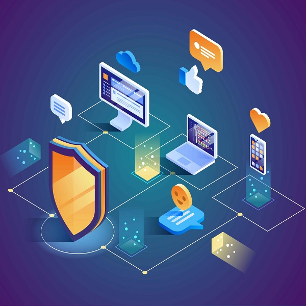

Seguridad en la comunicación de datos de una red
La seguridad en las comunicaciones hace referencia al nivel de protección existente de la privacidad
digital, es imprescindible proteger los datos de accesos sin autorización o de una posible
corrupción.
Dentro de esta parte de la seguridad en las comunicaciones se incluye la encriptación, la
tokenización y otras prácticas sobre la gestión de claves. Gracias a todas ellas se protegen los datos en
cualquier aplicación o plataforma
A continuación se presentan algunos elementos importantes en la seguridad de los datos en las comunicaciones
Encriptación
La encriptación se encarga de proteger todos aquellos datos o archivos que estén almacenados o que circulen
por Internet. Dificulta el acceso a los mismos y solo pueden leerse cuando se cuenta con la clave
correspondiente. Esta herramienta debe formar parte de la propia red y de la forma de trabajar, si queremos
garantizar la seguridad en las comunicaciones, existen muchas formas y herramientas que nos ayudan en esta
tarea de la encriptación de los datos.
Análisis de vulnerabilidad y control de intrusión
Los NIDS o sistemas de detección de intrusos se activan cuando alguna acción resulta sospechosa. Esta se
marca para una posterior revisión y se recopila de forma automática información sobre el tráfico anómalo y
lo comunican a los administradores.
En lo que se refiere al análisis de la vulnerabilidad, un hacker busca algún agujero en el sistema a través
del que poder acceder. Los analistas de la seguridad en las comunicaciones se encargan de detectar dichos
espacios y cerrarlos.
Firewalls
Un firewall es un dispositivo de seguridad de la red que monitorea el tráfico de red —entrante y saliente— y decide si permite o bloquea tráfico específico en función de un conjunto definido de reglas de seguridad. Los firewalls han constituido una primera línea de defensa en seguridad de la red durante más de 25 años. Establecen una barrera entre las redes internas protegidas y controladas en las que se puede confiar y redes externas que no son de confianza, como Internet. Un firewall puede ser hardware, software o ambos.

A continuación, un video sobre detalles del firewall y su importancia